I am a Scientist/Engineer-'SE' at Indian Space Research Organisation (ISRO), India, working at the intersection of Computer Vision, Image Processing and Earth Observation focusing on operational Geospatial AI pipelines. Prior to this, I completed my MTech in Computer Science at Jawaharlal Nehru University (JNU), New Delhi, India.
I am interested in computer vision and deep learning. My current work focuses on image processing (in particular satellite image restoration and radiometric calibration & validation) and development of Geospatial AI applications with a focus on cross-sensor adaptation.
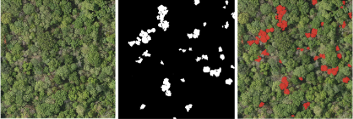
This is a benchmark dataset and evaluation protocol for teak-tree segmentation from high-resolution drone imagery. It compares U-Net, PSPNet, DeepLabV3, and SegFormer, with SegFormer achieving state-of-the-art performance. The benchmark supports accurate, efficient monitoring of teak plantations in India’s western tropical forests.
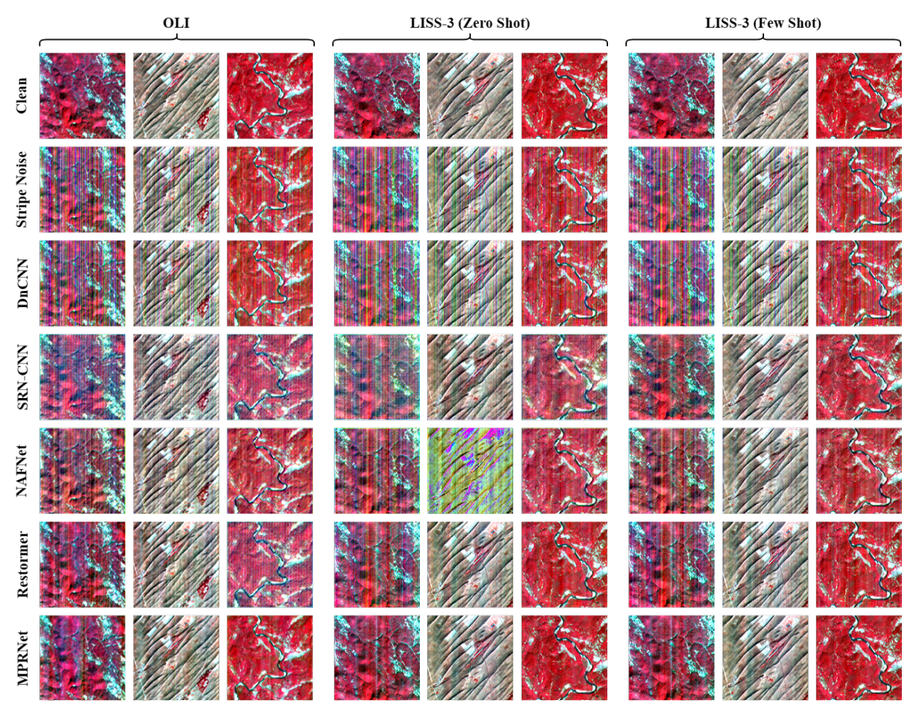
This study introduces a new benchmark to evaluate how effectively restoration models perform satellite image denoising and destriping across various optical sensors and resolutions. Using a newly curated dataset combining Landsat-8 OLI and Resourcesat-2A LISS-3 imagery, we analyzed the robustness of state-of-the-art models and quantified the impact of few-shot domain adaptation.
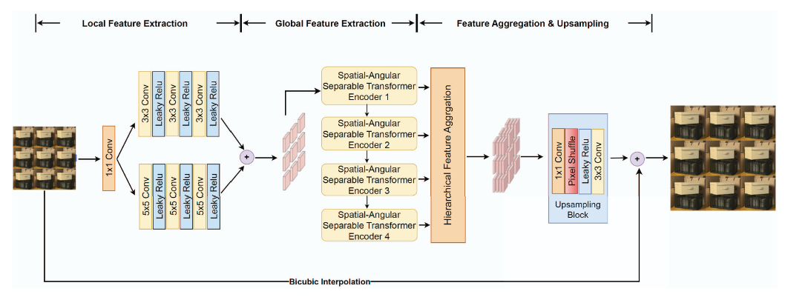
As a workshop's challenge track, we introduced a novel deep ensemble method combining multiscale LF-DET and BigEPIT networks to overcome their individual performance bottlenecks on real versus synthetic datasets. Achieved 8th position in final ranking of the competition.
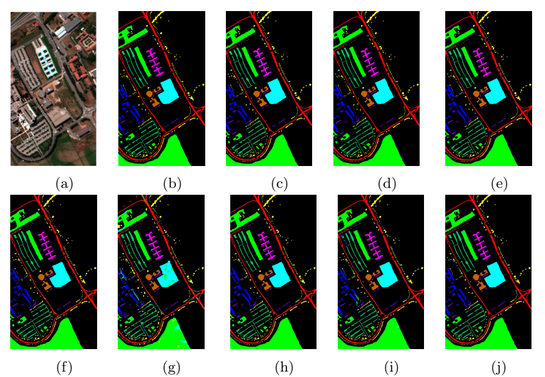
We introduce the 3D-CmT model for Hyperspectral Image Classification, a hybrid architecture that combines 3D-CNNs and Vision Transformers to effectively map narrow, contiguous electromagnetic spectra. The model uses a 3D-CNN spectral feature extraction module to capture localized spectral details, while a subsequent Transformer Encoder module applies global attention to model long-range spatial dependencies.
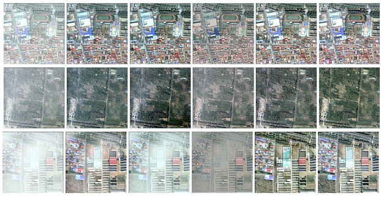
We proposed the Satellite Image Dehaze Network (SID-Net), a hybrid model that integrates a modified Vision Transformer (ViT) block into a CNN architecture to restore latent haze-free satellite images. Evaluated on the challenging SateHaze1k dataset, the model leverages self-attention and convolutional mechanisms to successfully overcome the structural limitations of standard image dehazing methods.
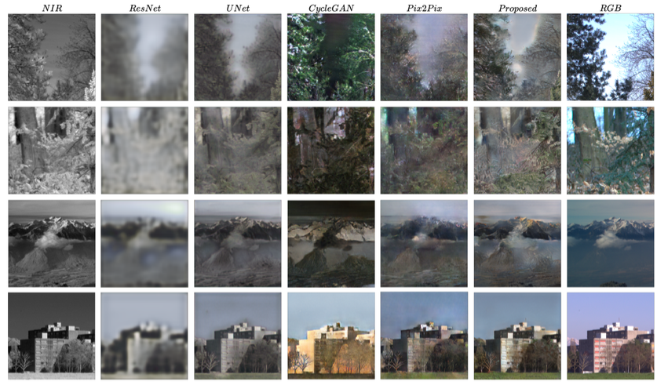
Introduced a novel approach for Near-Infrared (NIR) to RGB image colorization by leveraging a Conditional Generative Adversarial Network (cGAN) to make spectral data more interpretable for humans. The core innovation centers on an enhanced Attention UNet architecture acting as the generator, which significantly improves color translation accuracy.
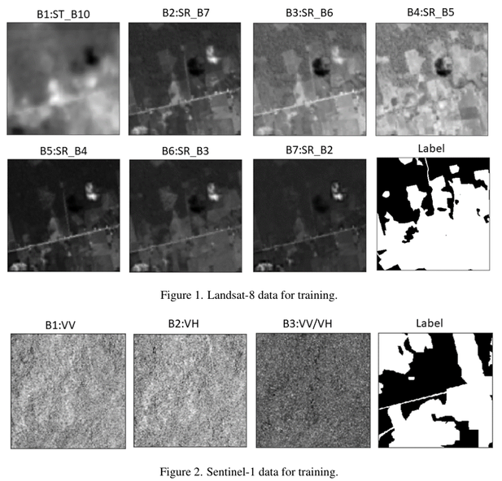
As a challenge track, we present a novel deforestation estimation method based on an attention-guided UNet architecture that separately utilizes Electro-Optical (Landsat-8) and Synthetic Aperture Radar (Sentinel-1) satellite imagery.
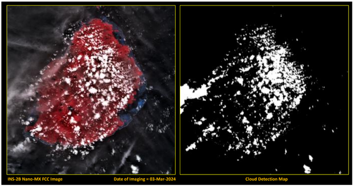
This study evaluates the operational radiometric and geometric performance of the advanced four-band INS-2B Nano-MX multispectral payload using campaign data from March 2024.
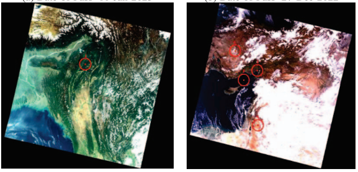
We detail the advanced end-to-end processing and calibration pipeline developed for the thirteen-band Ocean Color Monitor-3 (OCM-3) sensor launched aboard ISRO's Oceansat-3 satellite.
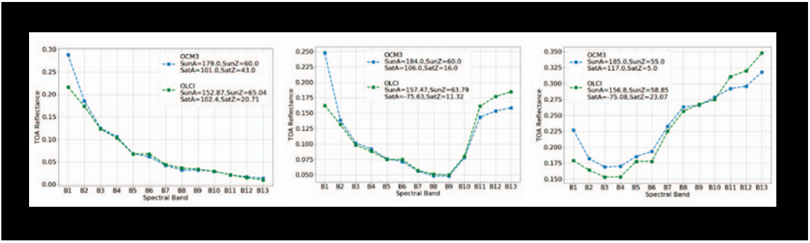
We present a cross-sensor radiometric verification framework that evaluates the post-launch performance of the EOS-06 Ocean Color Monitor (OCM-3) against the state-of-the-art Sentinel-3A/3B Ocean and Land Colour Instrument (OLCI).
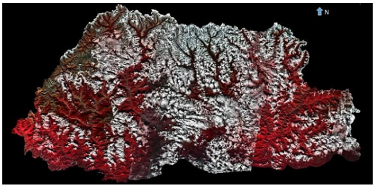
We present an in-depth analysis of the in-orbit radiometric and geometric performance of the Nano-MX instrument onboard the India-Bhutan SAT (INS-2B) satellite launched in November 2022.
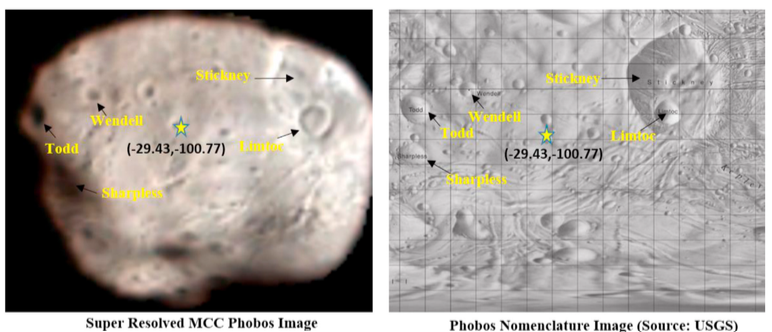
We present a data-processing framework developed to spatially enhance and radiometrically correct multi-frame imagery of the Martian moon, Phobos, captured by the Mars Color Camera (MCC) onboard ISRO's Mars Orbiter Mission (MOM).